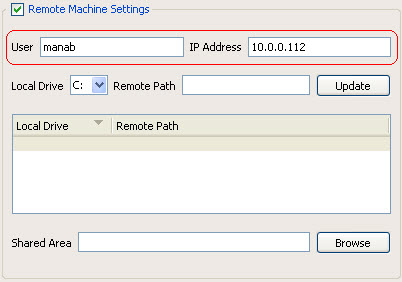
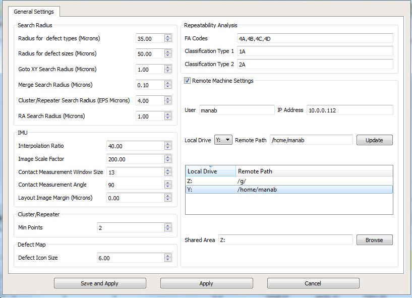

For GDSII and
OASIS files, the creation of a database is done locally on the machine
where Calibre DefectReview was launched. For MEBES.JOB and MEBES
files, database creation is done remotely on a Linux machine.
For
this procedure, an example is used for illustration purposes. This
example uses the following:
On the Linux machine, the MEBES job
deck file is located on /g/repository/data/ mebes_data.jb.
The mebes_data.jb file
is accessible from a Windows machine using the path Z:/repository/data/mebes_data.jb.
The Linux machine IP address is 10.0.0.112.
The Linux user login name is manab.
On the Linux machine, the HOME directory
for manab is /home/manab and
this directory is accessible on Windows using the path Y:.
This type of mapping of Linux drives is
done using the Map Network Drive options
in Windows.
Procedure
- Launch a Calibre DefectReview
session on the Windows machine.
- In the Calibre DefectReview
window, select Utilities > Calibration
Parameter Editor. This invokes the Calibration Parameter
Editor.
- In Remote Machine Settings
section, enter the user name and IP address for the Linux machine
(shown in Figure 1). For example:
User: manab
IP Address: 10.0.0.112
Figure 1. Reading Remote Machine
User Name and IP Address
- Map the Windows network drives
and Linux paths in the Remote Machine Settings section. This enables
Calibre DefectReview to convert a Windows path to a Linux path.
For example, the following
mapping information is added for the Z: and Y: drives.
- Click Save and Apply to save these
settings.
Note: This stage is typically done
only once.
Figure 4. Save and Apply in
the Calibration Parameter Editor